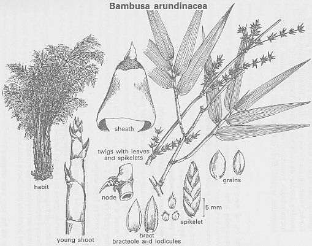

|
ECONOMICALLY
IMPORTANT PLANTS OF INDIA |
| Under-utilized Food and Fodder species and their wild relatives | Contributed by Ms.M.L Annapurna And Dr. Dhanapal, UAS, Bangalore |
Bambusa
arundinacea Willd.

HABIT & HABITAT

A tall, thorny bamboo, with a thick central root-stock, bearing bright green
shining culms, 80-100 ft hight and up to 6-7" in diameter wild throught
India up to 1000 ft. It generally
flowers gregariously, once in about 30 years. The clumps then die out, after
producing an abundant crop of grains. Cutivated in dry deciduous forest,
Forests, Gardens, Hill forests, Hill slopes, Hilly regions, moist deciduous forest,
Plains, Ravine
slopes, ravines, Scrub Jungle, waste land,
BioticZone: Himalaya,Konkan,Konkan plain,none,Tropics,West Coast,Western Ghats,
akeri, all districts, Begur, Bhandaria, Bombay, Butpal-Ordofond,codal, Girnar
road (Saurashtra),hewale,Karimpuzha,Nilambur,khanale,Lolita Jhil,Mahaballeshwar,Matheran,Nagarahole,Nallamalais,none,Periyarum,Pithora,Potiem
forest,Raigad,rakshasbhuwan,Regional Research
Station,Brahmavar,Sawarna,Sindhudurg,Tekkumalai,Trombay,Zari,
Availability : The species occurs in wild
throughout the greater part of the country, especially in the-hill forests of
western and southern India, ascending up to 3000 mts on the Nilgiris. It occurs
in the warmer parts of Ceylon and Burma, and is wild on the Pegu and the Martaban
hills. It is also grown in other parts of India. The species grows rapidly (about
1' 8" per day).
Country: Burma, Ceylon, India, Myanmar, Sri Lanka,
Zone: Central, North, South,West,
State: Andhra Pradesh, Goa Daman Diu, Gujarat, Karnataka, Kerala, Madhya
Pradesh, Maharashtra, Rajasthan, Tamil Nadu,
District: Ahmadnagar, Amaravati, Banswara, Bastar, Bilaspur, Bombay, Cannanore,
Chengalpattu, Coimbatore, Dakshin Kannada, Damoh, Dhule, Goa, Hassan,
Hoshangabad, Jhalawar, Junagadh, Kodagu, Kolhapur, Kurnool, Malappuram, Mysore,
Nagpur, Nasik, Nilgiri, North
Western districts, Pune, Raigad, Raipur, Ramnathapuram, Ratnagiri North,
Satara, Sikar, Sindhudurg, South Arcot, Thane, Tiruchchirappalli, Tiruchi,
Tirunelveli, Trichurapalli, Tumkur, Uttar
Kannada,
Taluk: Canacona, Igatpuri, Kankavli, Sanguem, Satari, sawantwadi, tenkasi,
Wadgaon,
Status :
REPRODUCTIVE BIOLOGY
Breeding System :
Phenology :It generally
flowers gregariously, once in about 30 years. The clumps then die out, after
producing an abundant crop of grains.
Seed Biology:
Seed Germination :
Harvesting
Practices and yeild: Parts used : Uses:
1.Young shoots are pickled or made
into curries.
2. Its-grains are eaten during famines.
1. It yields paper pulp of good quality. 2. Tabasher occurs in the hollows of its
culms. 3 .Its leaves and-twigs are used as fodder and- are-largely consumed
by elephants and cattle. 4.The young shoots contain a cyanogenetic glucoside and are poisonous. The glucoside
is hydrolysed by an enzyme, also present in the shoots, when they are cut into
pieces and soaked in water. 5.One quarter of an ounce of raw shoots or a slightly larger amount of insufficiently
cooked shoots can cause death. 6.The young shoots contain 0-03% of HCN and are lethal to
mosquito larvae. 7.The leaves are reported to be given to horses
as remedy for coughs and colds. ( Attempts have been made to obtain crosses with sugarcane at the Coimbatore
Sugarcane Experimental Station. )
Produce and Products ;
Chemistry
MAJOR PESTS AND DISEASES
Economic
Potential and Uses
Young shoots and
Leaves.
Bamboo: The culms are used for the making mats, baskets, door curtains and
huts.
The husked grain contains: water, 11.0; starch, 73-7 albuminoids, .11-8; oil,
0-6; fibre:, 1.7 ; and ash, 1-2%. The plant gave cyanogenic glucoside-taxiphyllin.
Folk medicine:
Young shoot extract is very much useful to maintain the discontinuety of menstrual troubles.
2.Sheshadri Rao., Harsha Sriramulu (1986). Flora of Srikakulum District: Flora of India series. Indian Botanical Society, Dept of Botany, Meerut. P: 504.
3.Singh, N. K. and Singh, D. P., 2001, Ethnobotanical Survey Of District Balrampur, Flora And Fauna, Vol.7. No.2 pp.59-66
4.Sasya Sahyadri-A CD on
Plants of Western Ghats, 2003, by K. N. Ganeshaiah.
5.The wealth of India, A
Dictionary of Indian Raw Materials and Industrial Products, Vol. I. A-B,
Publications and Information Directorate, CSIR, New Delhi, India, 1948.pp.
6.Dictionary of Indian Medicinal Plants 1992.Akhtar Husain et al. Central Institute of Medicinal and Aromatic Plants. Lucknow. India. pp 65.